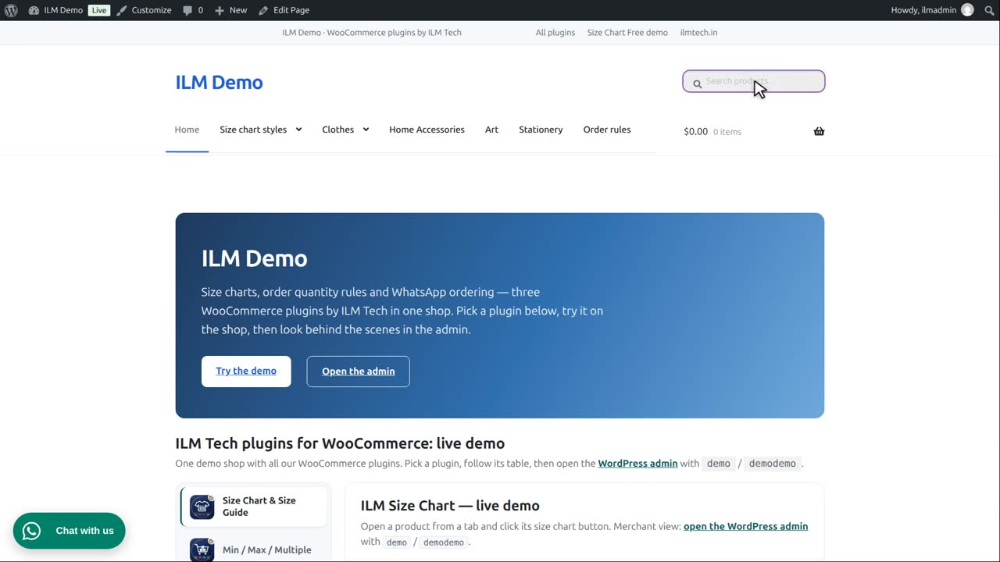
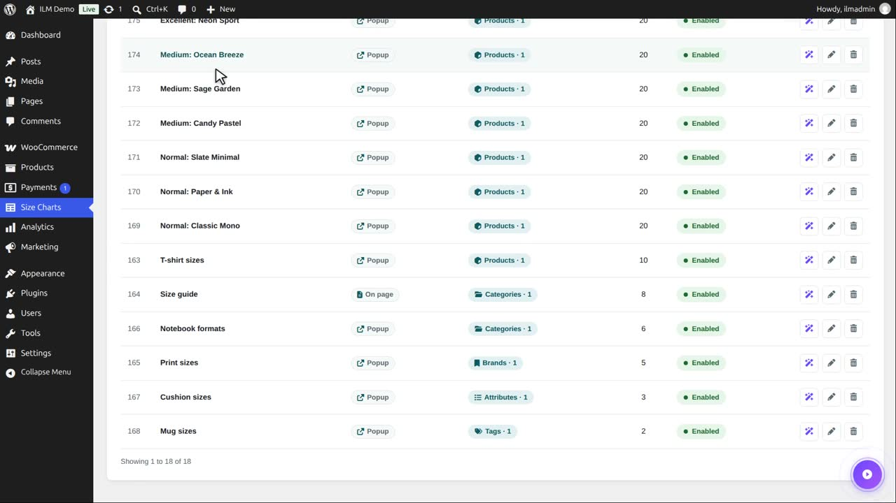
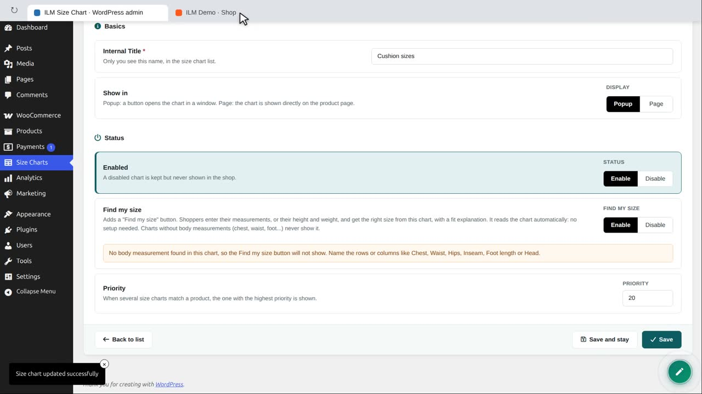
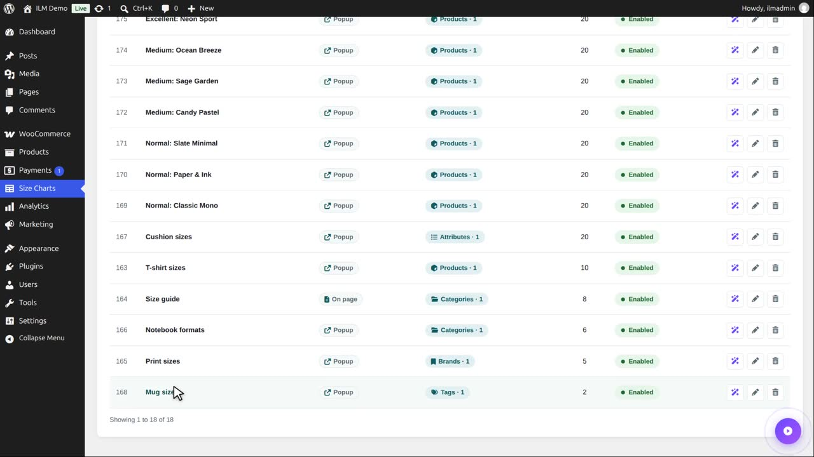
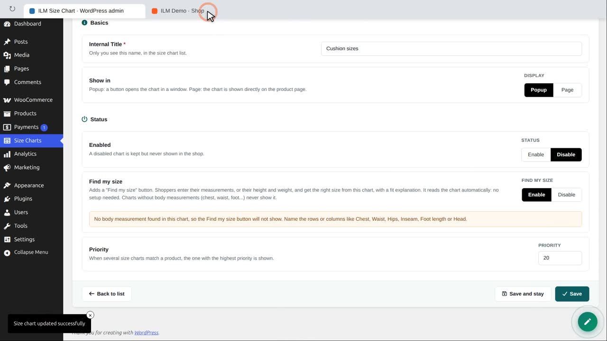
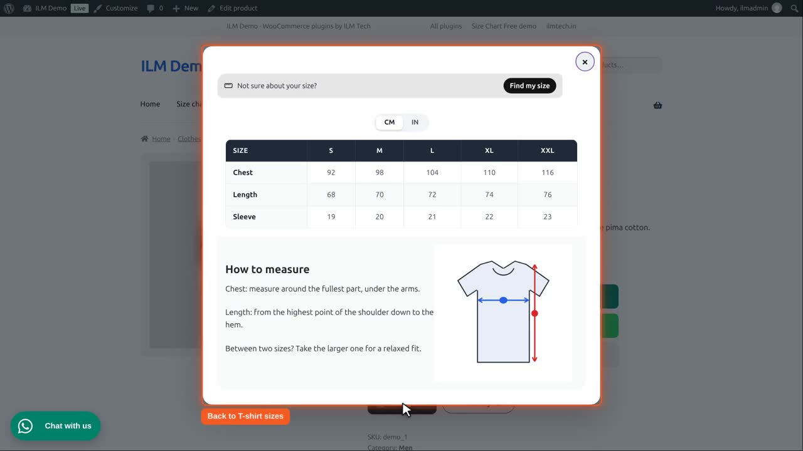

| Field | What it does |
|---|---|
| Status | Enable shows the chart in the shop; Disable keeps it without showing it. |
| Priority | When several size charts match a product, the one with the highest priority is shown. |
Which chart does a product show? When several charts match a product, the chart with the highest Priority (General tab) is shown. When two charts have the same priority, a chart that lists the product (or its attribute, category, brand or tag) beats a chart set to All, in this order: product, attribute, category, brand, tag.
Two charts match our T-shirt: T-shirt sizes, chosen for this product, with priority 10, and Cushion sizes, shown to every product with a certain attribute, with priority 3.

A product shows only one chart: the one with the highest priority. So the T-shirt shows T-shirt sizes.

Edit Cushion sizes. At the bottom of the General tab, set its priority to 20, higher than 10.

Save, and reload the T-shirt. Now the Cushion sizes chart wins.

Status turns a chart off without deleting it. Click Disable.

Save, and the T-shirt is back to T-shirt sizes. A disabled chart is skipped, whatever its priority.

Tip: give specific charts, like one product, a higher priority than general ones, like a whole category.